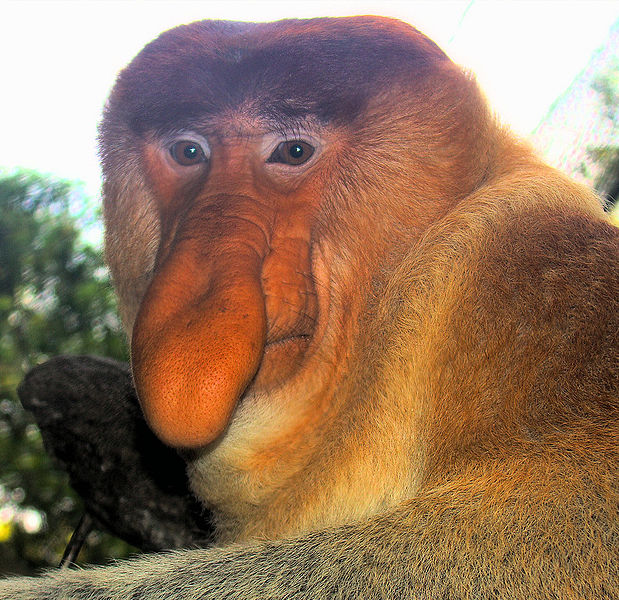

Le Nasique (Nasalis larvatus) est un singe arboricole de la famille des cercopithecidés endémique de l'île de Bornéo. Il est l'unique représentant du genre Nasalis depuis que le Nasique des îles Pagai (Simias concolor) a été classé dans un genre à part. Il est classé en danger par l'UICN.
Il est également appelé Long nez[1] ou Singe à trompe[2]. Longtemps considéré comme semnopithèque, le nasique est parfois encore appelé Semnopithèque nasique.
 Site Lukas